TL;DR
Part 1 said never draft an RB in round 1. We stress-tested that advice and found three blind spots: roster context matters (9 teams enter 2026 needing an RB), class depth varies wildly (2026 is the thinnest RB class in years, and Jeremiyah Love is the only Elite prospect), and not all prospects are average (Love’s 94.3 Prospect Score ranks 5th all-time among RBs). The model’s positional hierarchy still holds. QB is king, and early picks are loaded with premium talent. But Love’s 90th-percentile outcome crosses the premium surplus line at a mid-first-round pick, meaning teams drafting after that point who need a back can justify the gamble. It’s a bet on a Gurley/CMC-level career. Love’s pre-draft profile says the bet is worth making.
The Sharpe Ratio Was Incomplete.
In Part 1, we built a quasi-Sharpe ratio for NFL draft picks. The math was clean. The conclusion was clear: RB shows negative returns across all tiers – never draft one in round 1.
That was the takeaway from our initial analysis. But if we break down some key assumptions and approach this from a different angle, does it make sense to draft an RB early?
GMs don’t draft on average. They draft in specific years, with specific rosters, facing specific prospects. A model that can’t account for context isn’t wrong – it’s incomplete. This is Part 2: an honest stress test that defines where Article 1’s advice falls short.
The gap between the model’s advice and what teams actually do isn’t always inefficiency – sometimes it’s intelligence. We tested three assumptions behind Part 1:
| Assumption | What Could Break It |
|---|---|
| Teams should always draft the highest-Sharpe position | Roster needs make some positions irrelevant for some teams |
| All draft classes are interchangeable | Class depth varies wildly year to year |
| Snaps measure quality, and all prospects are fungible | Career value tells a different story, and elite prospects break the averages |
Quick Recap: What Part 1 Found
The quasi-Sharpe ratio combined three things: rookie contract surplus (how much cheaper a drafted starter is than a free agent), second-contract value (the market’s verdict), and elite probability (the chance of a top-decile outcome). We measured risk-adjusted returns by position and draft tier from 2010–2022.
Key findings: QB leads all positions in top-10 Sharpe (0.37). OT and EDGE peak in the late first round (0.59 for EDGE). RB was the worst first-round investment: Sharpe of -0.62 in the top 10, negative across every tier.
The advice was simple: if you want a running back, wait until Day 2 or sign a free agent. The data said so.
But data without context is just math. Let’s break down the assumptions and see where they fall short.
Weighted Career AV: Our Measuring Stick
This article leans heavily on a single metric, so it’s worth understanding exactly what it is and why we chose it.
Weighted Career Approximate Value (weighted career AV) is Pro Football Reference’s attempt to boil an entire NFL career into one number. It works in two steps:
- Season-level AV assigns each player a value for every season based on playing time, statistical production, and team success. A quarterback who throws 4,500 yards on a playoff team earns more AV than a backup who plays four games on a 4-win team.
- Career weighting sums those seasons but gives extra credit to peak years. The formula weights the best season at 100%, the second-best at 95%, the third at 90%, and so on. A player who had five great years and five mediocre ones scores higher than a player who was merely okay for ten straight.
The result: career AV rewards sustained excellence. Derrick Henry’s 86 career AV reflects a decade of elite rushing production. A replacement-level back who hung around for eight years as a committee member might accumulate 25. The gap between those numbers is real – it maps to Pro Bowls, All-Pro selections, and the kind of production that wins games.
Why not use Part 1’s Sharpe ratio? Part 1 measured “return” using second-contract value – what the market paid a player after his rookie deal. That’s a reasonable proxy for quality, but it has a blind spot: the NFL market systematically underpays running backs. A back who rushes for 1,200 yards a season for four years might walk in free agency or get a modest extension, while a league-average edge rusher commands $15M/year. The Sharpe ratio captures what the market values, not what the player produced.
Weighted career AV strips out the market layer entirely. When we ran Part 1’s Sharpe formula with career AV as the return metric instead of snap-based contract returns, RB jumped from dead last (negative Sharpe) to 6th out of 11 positions with a positive Sharpe of 0.249. That gap is the market inefficiency at work: RBs produce more than the market pays them for.
For this article, we need a metric that measures production, not market sentiment. That’s career AV.
We define an elite outcome as finishing in the top 10% of weighted career AV at their position (90th percentile). This is a much stricter bar than Part 1’s snap-based “hit” – it doesn’t just ask whether a player became a starter, but whether they became great.
Assumption 1: Teams Should Always Draft the Highest-Sharpe Position
Article 1 implicitly assumed that every team should always draft the highest-Sharpe position available. But what if you already have a starter? A committee back averaging 3.8 YPC isn’t the same as Saquon Barkley. The depth chart says “RB is filled.” The roster has a hole.
We added a quality gate: a position is only “filled” when the starter plays above the snap threshold, earned a second contract above the free-agent replacement cost, and isn’t on an expiring deal. A replacement-level player who plays a lot doesn’t count. With that filter in place, we re-ranked every team’s draft efficiency.
How Need-Adjustment Changes the Rankings
In Part 1, we ranked teams by “draft efficiency,” the average Sharpe ratio of their first-round picks. A team that spent top-10 picks on high-Sharpe positions (QB, OT, EDGE) scored well; a team that spent them on low-Sharpe positions (RB, S) scored poorly. It’s a clean metric, but it ignores one obvious thing: whether the team actually needed a player at that position.
The need-adjusted version gives partial credit to teams that drafted low-Sharpe positions to fill genuine roster holes, and penalizes teams that drafted high-Sharpe positions they already had covered. The chart shows every team’s original rank vs their need-adjusted rank.
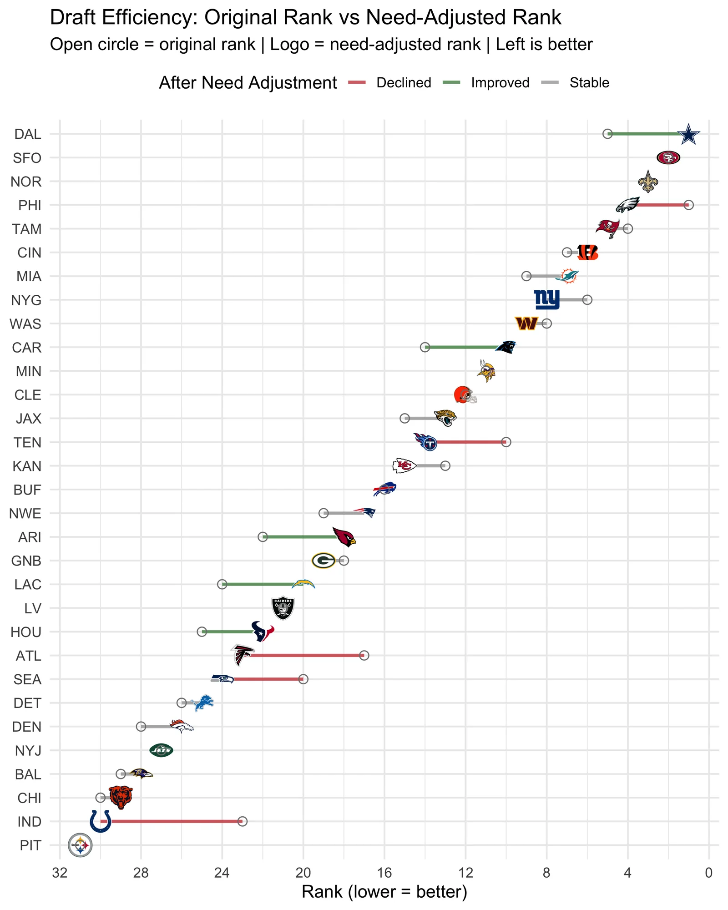
Biggest climber: DAL moved up 4 spots: they addressed real needs with their first-round picks. Biggest faller: IND dropped 7 spots: they kept drafting positions they already had filled.
The takeaway: Picks that fill genuine roster needs perform better. Picks addressing real needs average a need-adjusted Sharpe of 0.057 (n=256), while picks at already-filled positions average -0.139 (n=32). A player drafted into opportunity has a clearer path to snaps, production, and a second contract. The Sharpe ratio tells you which positions have the best average returns. But if you already have a franchise QB, that average is irrelevant to you. Roster context turns a general truth into specific advice.
Assumption 2: All Draft Classes Are Interchangeable
The Sharpe ratio averages across 13 draft classes (2010-2022). But class quality varies wildly. If a GM could know whether this year’s class is loaded or barren before the draft, the model’s one-size-fits-all advice starts to crack.
We actually can measure this – at least partially. NFL Next Gen Stats publishes composite prospect scores before the draft, combining athletic testing, college production, and size. These scores exist before a single snap is played in the NFL.
Prospective Class Quality: What Teams Know Before the Draft
NGS uses four tiers: Below Average (50-60), Average (60-70), Good (70-90), and Elite (90+). Instead of looking at mean scores (which compress into a narrow band), we count how many prospects in each class grade as Good or better. A class with five Good+ prospects is fundamentally different from one with two, even if their averages are similar.
We’ll start with RB – the position at the center of the Sharpe debate – then see how the pattern plays out across every position group.
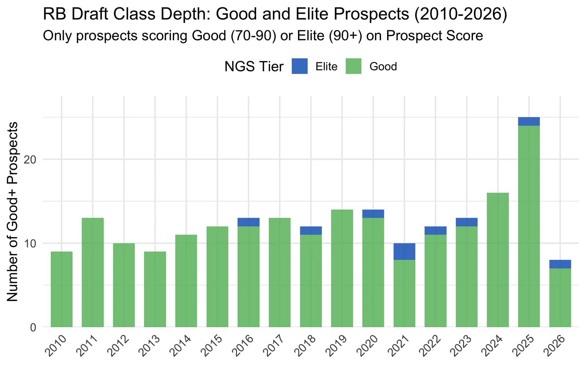
The variation is striking. Some RB classes are loaded with Good+ talent; others barely register. A GM drafting RB in a deep year is playing a fundamentally different game than one drafting in a thin year – but the Sharpe ratio treats them identically.
Now the same view across every position:
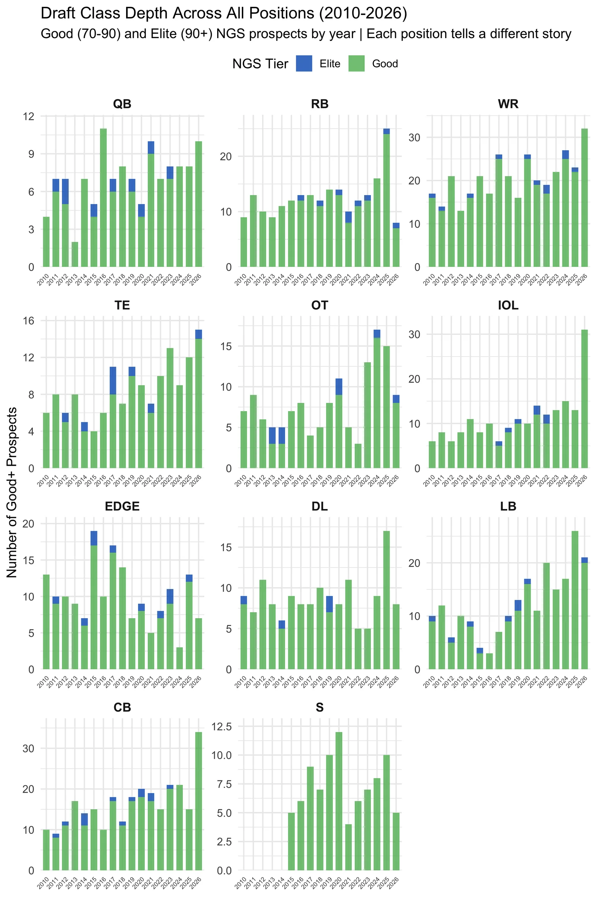
The 2019 RB class had 14 prospects grading Good or better, the deepest pool of pre-draft talent in our sample. The 2010 class had just 9. That’s the difference between a class where you can find value in any round and one where you’re chasing a single standout.
The same pattern plays out at every position. Some years WR is loaded and EDGE is thin. Some years the OT class is deep while TE is barren. QB class depth is notoriously spiky – one or two Elite prospects can define the entire class. The Sharpe ratio can’t see any of this. it averages across all years as if every class is the same. GMs know better. The 2020 RB class had 14 prospects grading Good or better, the deepest pool of pre-draft talent in our sample. The 2013 class had just 9. That’s the difference between a class where you can find value in any round and one where you’re chasing a single standout.
The same pattern plays out at every position. Some years WR is loaded and EDGE is thin. Some years the OT class is deep while TE is barren. QB class depth is notoriously spiky – one or two Elite prospects can define the entire class. The Sharpe ratio can’t see any of this. it averages across all years as if every class is the same. GMs know better.
The 2026 Class at a Glance
Applying the same framework to the 2026 draft class: CB (34 Good+), WR (32), and IOL (31) are the deepest classes this year. The thinnest: RB (8 Good+) and QB (10 Good+).
The RB class stands out as especially thin. Only 8 RB prospects grade as Good or better — and Love is the only one in the Elite tier. That 17-point gap to RB2 isn’t just a Love story; it’s a class story. If you pass on Love, the next RB option is a significant downgrade.
QB is thin too, but for QB the bar is different: Good isn’t good enough. QB is the one position where only elite prospects (Elite tier) reliably return value in the top 10. a Good QB prospect at pick 5 is a much bigger gamble than a Good OT or EDGE at the same spot. For most other positions, Good is deep enough to find value.
On the other end, IOL is loaded: the deepest position group give teams plenty of quality options throughout the draft. If you need an interior lineman in 2026, the class will come to you.
This is supply and demand, and the Sharpe ratio doesn’t account for it. When a class is deep (IOL, CB, WR this year), supply is high and quality players will be available in later rounds, so the marginal cost of waiting is low. The Sharpe ratio’s advice to ‘draft premium positions’ works well here because you’re not giving up much by passing on round 1.
But when a class is thin (RB, QB this year), supply is scarce. The drop-off from prospect #1 to #2 is steep, and waiting means the position becomes dramatically harder to fill. In a loaded class, you can find value at pick 50. In a thin class, the value might only exist at pick 10. The Sharpe ratio averages across all classes, it can’t tell you that this year’s supply curve looks completely different from last year’s.
That’s the blind spot. The model says ‘don’t draft RB early’ based on historical averages. But the supply/demand equation changes every year, and in 2026, the RB market is tight.
Did the Pre-Draft Signal Match Reality?
The NGS scores tell us what the class looked like before the draft. But did the “deep” classes actually produce more hits? Here’s the RB timeline with retrospective hit rates: the percentage of ALL drafted RBs that season who became starters (75%+ of positional snap baseline, from Article 1). Bar color is the pre-draft NGS classification, bar height is what actually happened.
Why stop at 2022? Hit rates require a full four-year rookie contract to evaluate. A player drafted in 2023 has only played two seasons, which isn’t enough to know if they’ll become a starter. The 2022 class is the most recent with enough NFL tape to judge.
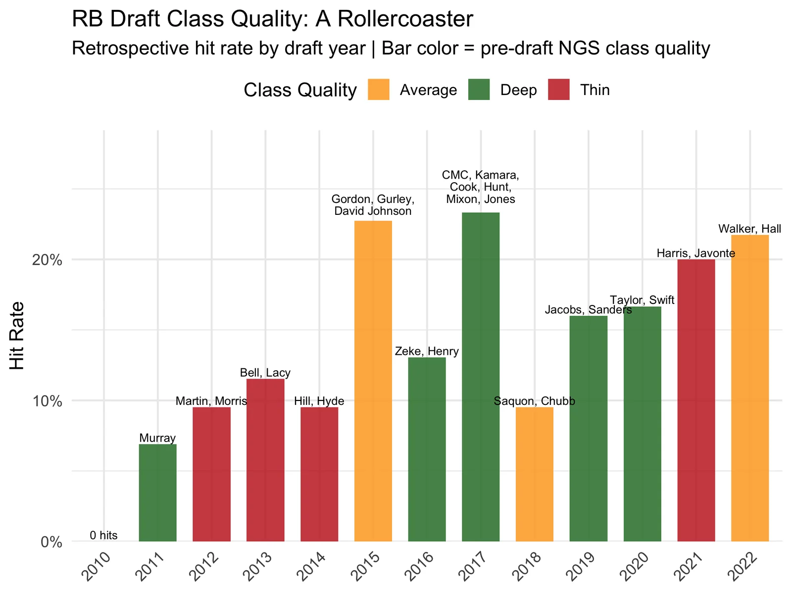
The colors (pre-draft class depth) and heights (what actually happened) track each other. The correlation between a class’s Good+ prospect count and its eventual hit rate is 0.42.
The mismatches are revealing. 2010 had the highest mean NGS score but produced zero hits. athletic profiles alone don’t guarantee production. Meanwhile, 2017 was the best actual class (23.3% hit rate) because six different backs all found NFL roles.
The model says “never draft RB.” The class data says “it depends on the year.” And the NGS tier breakdown gives GMs a real window into which kind of year it is. before the first pick is made.
The same signal-vs-reality check across other positions:
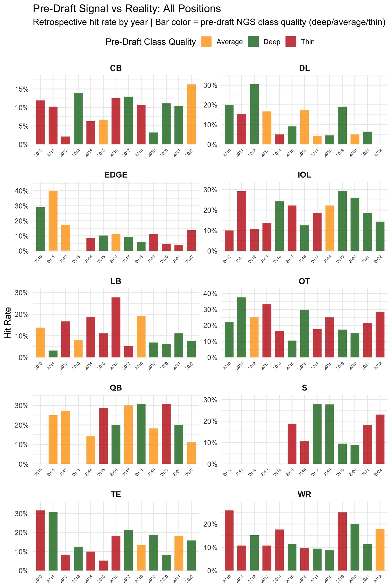
The pre-draft signal isn’t equally predictive everywhere. DL shows the strongest correlation (r = 0.45) between Good+ prospect count and eventual hit rate, while LB shows the weakest (r = -0.57). Positions where athleticism translates more directly (RB, EDGE) tend to have stronger pre-draft signals. Positions where scheme fit and development matter more (IOL, S) show weaker connections between prospect scores and career outcomes.
Assumption 3: Snaps Measure Quality, and All Prospects Are Fungible
The Sharpe ratio averages over all RB prospects. But we’ve already seen that not all classes are equal. The same logic applies to individual prospects: the model can’t distinguish between an average back and a generational one.
The challenge is identifying elite prospects without hindsight. Career Approximate Value (AV) – our retrospective measure – tells us who turned out to be elite, but a GM can’t use it on draft day. Prospect Scores can. They’re published before the draft, combining athletic testing, college production, and size into a single number. It’s the closest thing to a prospective elite-prospect identifier that exists.
Definitions for this section:
- Pre-draft elite: Top 10% of Prospect Score at the position (knowable before the draft)
- Career elite: Top 10% of career Approximate Value at the position (only knowable in hindsight)
- Hit (outcome measure): Article 1’s snap-based starter threshold, a player who plays above 75% of baseline snaps at their position. This is our outcome metric for comparing elite categories because it’s independent of weighted career AV (which defines the career elite group).
NGS Scores and Career Outcomes
Pre-Draft Elite vs Career Elite
Note: This section uses 2010-2022 draft classes only. The 2023-2025 classes haven’t played enough NFL seasons to evaluate career outcomes.
The Sharpe ratio treats all prospects at a position the same. But if we can identify which prospects are likely to become great before the draft, the average-case advice becomes less relevant. We can define “elite” two ways: retrospectively (top 10% of weighted career AV at the position) and prospectively (top 10% of Prospect Score at the position). How much do they overlap, and does it differ by position?
If high NGS scores actually predict career success, the top-scoring prospects should cluster toward the top of the career value axis. Here’s every RB with an NGS score, with the pre-draft elite prospects (top 10% NGS) highlighted:
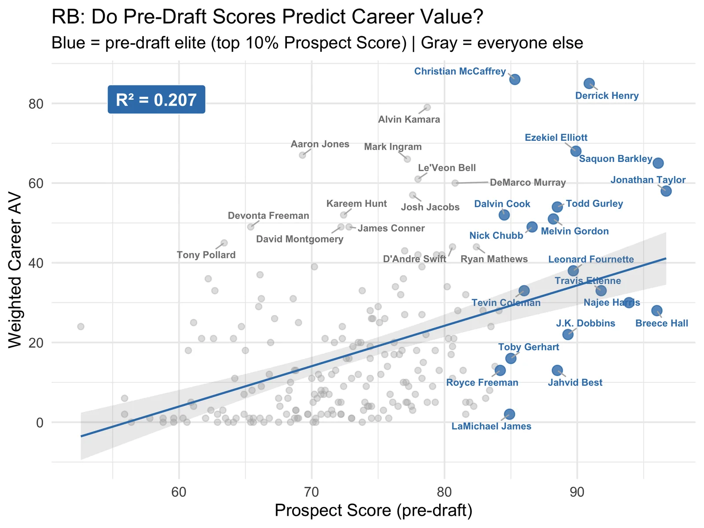
The pre-draft elite prospects (blue dots) cluster toward the upper right: high NGS scores mapping to high career value. Pre-draft elite RBs averaged 41.9 career AV, vs 15.1 for everyone else. They became starters at 68.4% vs 14.1%.
Not every pre-draft elite prospect panned out. Jahvid Best and LaMichael James scored elite on NGS but busted. But the signal is clear: the top of the NGS distribution produces starters at dramatically higher rates.
The same view across all positions:
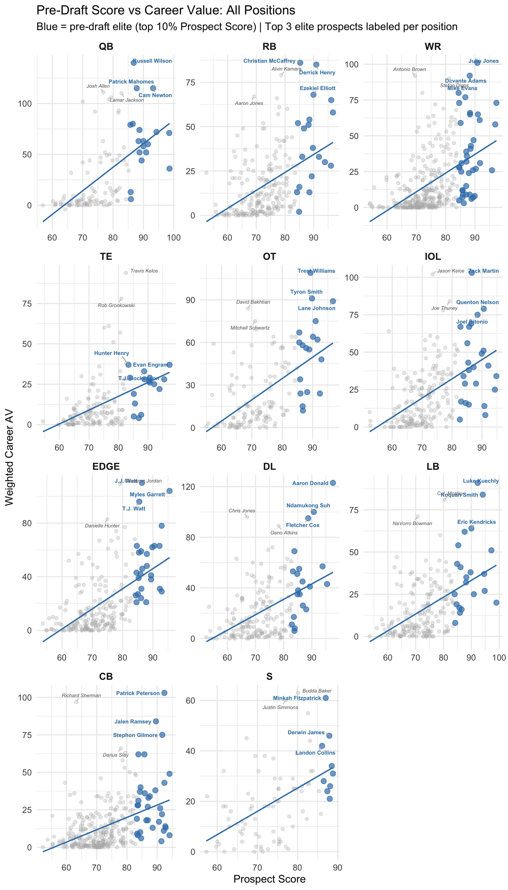
Across all positions, pre-draft elite prospects became starters at 53.5% vs 13.5% for everyone else. The trend line slopes upward at every position, and the pre-draft signal isn’t perfect, but it meaningfully separates prospects who become starters from those who don’t.
| Prospect Score vs Career AV: R² by Position | ||||||
| How well does the pre-draft score predict career value? | ||||||
| Position | n | R² |
Career AV
|
Starter Rate
|
||
|---|---|---|---|---|---|---|
| Elite Avg AV | Other Avg AV | Elite Hit % | Other Hit % | |||
| QB | 112 | 0.350 | 66.3 | 20.3 | 77.8 | 16.0 |
| EDGE | 222 | 0.310 | 50.8 | 15.8 | 50.0 | 10.2 |
| OT | 134 | 0.308 | 53.8 | 20.3 | 66.7 | 19.8 |
| IOL | 202 | 0.258 | 41.8 | 19.2 | 62.5 | 19.1 |
| S | 88 | 0.255 | 34.8 | 18.1 | 66.7 | 20.3 |
| LB | 201 | 0.244 | 38.2 | 14.1 | 33.3 | 8.9 |
| WR | 330 | 0.234 | 37.3 | 14.3 | 48.7 | 13.7 |
| DL | 186 | 0.214 | 46.5 | 18.3 | 45.0 | 10.8 |
| RB | 217 | 0.207 | 41.9 | 15.1 | 68.4 | 14.1 |
| TE | 151 | 0.207 | 23.0 | 10.6 | 50.0 | 17.0 |
| CB | 308 | 0.187 | 31.1 | 11.4 | 42.4 | 8.7 |
The Historical NGS Elite
Who were the highest-graded pre-draft prospects at each position, and did they deliver? Here we use the stricter bar: top 10% of weighted career AV at their position. Not just a starter, but a great player. Starting with RB:
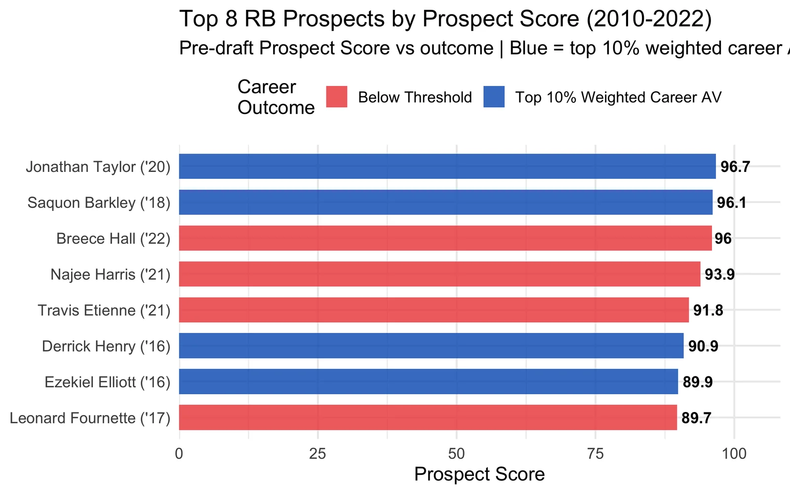
The top 8 RB prospects by pre-draft NGS score finished in the top 10% of career AV at 50%, far above the position’s overall average. The names are what you’d expect: Jonathan Taylor, Saquon Barkley, Derrick Henry, Ezekiel Elliott. These aren’t random outcomes. the pre-draft signal identified them before a single NFL snap.
Now the same view across all positions:
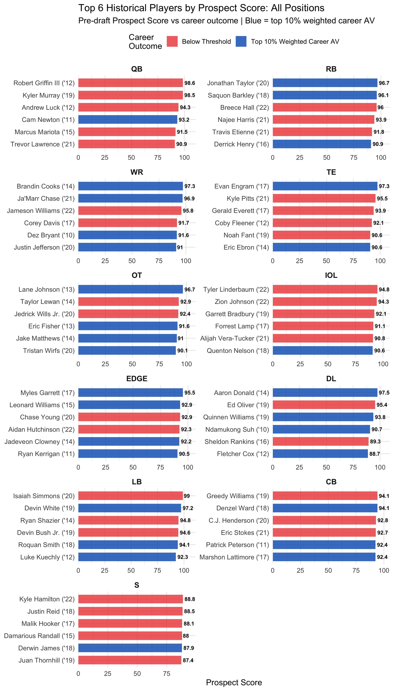
DL leads the pack: the top 6 NGS scorers reached top-10% weighted career AV at66.7%. S has the weakest pre-draft-to-career translation (16.7%). The model’s “never draft RB” is really “never draft an average RB.” When the pre-draft signal says a prospect is separated from the class, they become great at dramatically higher rates.
The Love Question Revisited
In Part 1, we asked: Should you draft Jeremiyah Love at 10?
The model said no. RB has a deeply negative Sharpe in the top 10. But we’ve now shown that the answer depends on things the model can’t see: roster needs, class depth, and prospect separation. Love is the case that brings all three together.
The 2026 RB Class
We showed above that historical RBs with elite pre-draft NGS scores become great at dramatically higher rates than the position average. Where does Love’s 2026 class fit in?
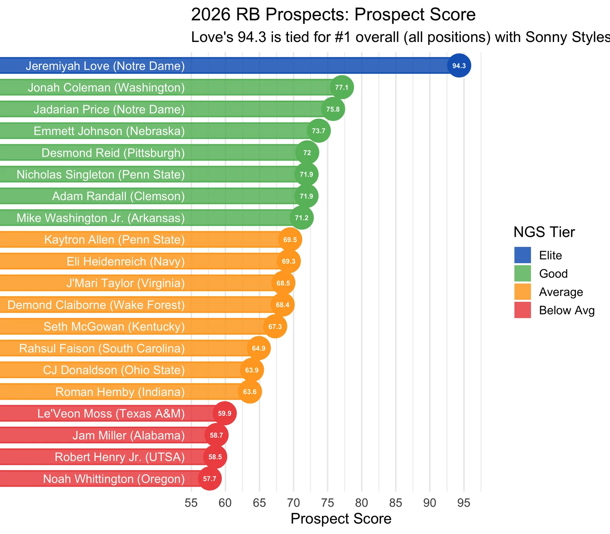
Love’s Prospect Score of 94.3 is tied for #1 overall across all positions. His Production Score of 95.9 is the highest of any prospect in the 2026 class. The gap to RB2 (Jonah Coleman at 77.1) is 17.2 points – a chasm by NGS standards.
Where Love Ranks in the Historical Record
How does Love’s 94.3 compare to every RB prospect since 2010? Here’s every RB with a Prospect Score, with Love highlighted:
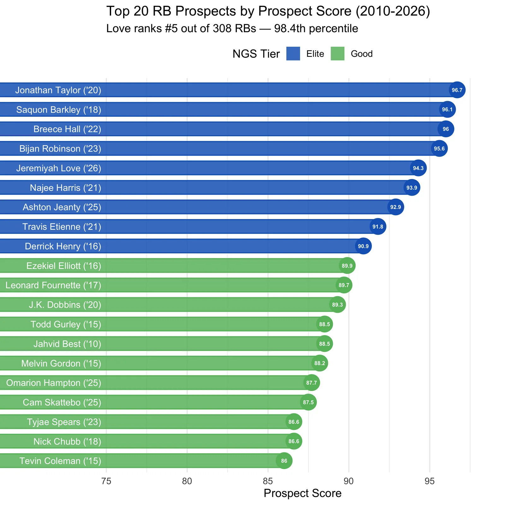
Love’s 94.3 ranks #5 among all 308 RB prospects in the NGS era. That puts him in the 98.4th percentile, in the company of Jonathan Taylor, Saquon Barkley, Breece Hall, and Bijan Robinson. The pre-draft signal is as strong as it gets.
But Love isn’t the only outlier in 2026. Here’s a look at the top prospect at every position:
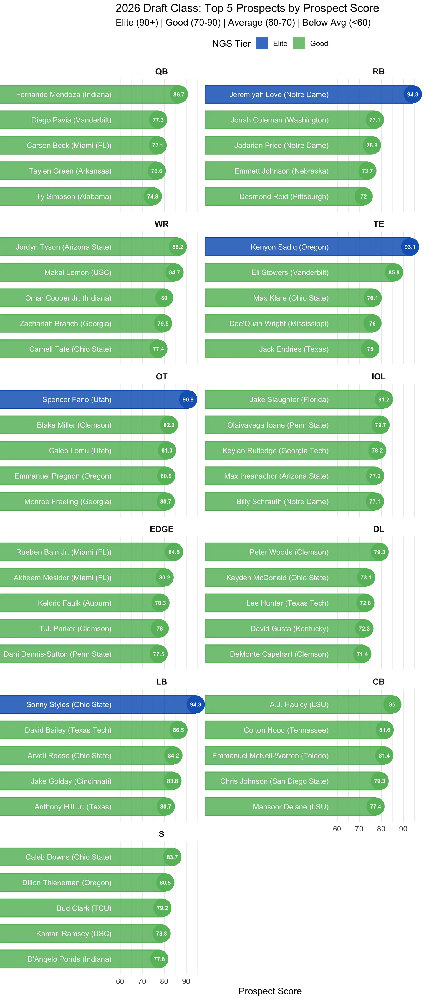
The 2026 class has fascinating separation patterns. RB has the biggest gap between the top prospect (Jeremiyah Love at 94.3) and #2 – a 17.2-point chasm. Meanwhile, WR is the tightest race, with just a 1.5-point gap at the top. Where a prospect is clearly separated, the elite-prospect argument gets stronger. Where the class is tightly bunched, the model’s average-case advice holds.
The NGS Prospect Score: What It Measures
Before we build models, it’s worth understanding the inputs. NFL Next Gen Stats publishes a Prospect Score (officially “Combined Score”) for every draft-eligible player. It’s a composite of three machine-learning models, each position-controlled:
- Athlete Score: Athletic testing data from the NFL Combine and pro days (40-yard dash, vertical jump, broad jump, agility drills, and more). Pure physical measurables, adjusted for what matters at each position.
- Production Score: College statistical production (yards, touchdowns, snap counts, efficiency metrics). A receiver who dominated the SEC grades differently than one who put up numbers in the MAC.
- Size Score: Body composition relative to positional norms (height, weight, arm length, hand size). A 6’5” tackle grades differently than a 6’5” receiver.
The Prospect Score combines all three into a single number from 0 to 100. It’s published before the draft, making it one of the few rigorous, position-adjusted prospect evaluations available to GMs in real time.
Predicting Career Value
The scatter plots show a pattern. Can we quantify it? We trained a linear regression predicting weighted career AV from only information available before the draft: the Prospect Score, draft position, and position group. All models are trained on 2010-2019 and validated out-of-time on 2020-2022.
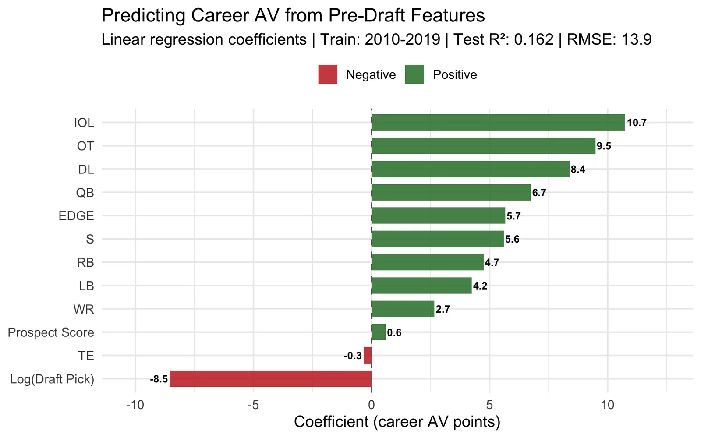
How well does this work in practice? Here are some players from the 2020-2022 test set, prospects the model never saw during training, with their predicted vs actual career AV:
| Model Check: Predicted vs Actual (2020-2022 Test Set) | |||||||
| Mix of outperformers, busts, and close calls | |||||||
| Player | Pos | Draft | Pick | Prospect Score | Actual AV | Predicted AV | +/- |
|---|---|---|---|---|---|---|---|
| Jalen Hurts | QB | 2020 | 53 | 85.7 | 79 | 33 | 46 |
| Justin Herbert | QB | 2020 | 6 | 88.7 | 74 | 53 | 21 |
| CeeDee Lamb | WR | 2020 | 17 | 88.3 | 65 | 40 | 25 |
| Justin Jefferson | WR | 2020 | 22 | 91.0 | 65 | 40 | 25 |
| Ja'Marr Chase | WR | 2021 | 5 | 96.9 | 58 | 56 | 2 |
| Tua Tagovailoa | QB | 2020 | 5 | 88.7 | 52 | 55 | -3 |
| DeVonta Smith | WR | 2021 | 10 | 89.5 | 47 | 46 | 1 |
| Zach Wilson | QB | 2021 | 2 | 85.8 | 13 | 61 | -48 |
| Jeff Okudah | CB | 2020 | 3 | 92.2 | 11 | 55 | -44 |
| Trey Lance | QB | 2021 | 3 | 85.9 | 6 | 58 | -52 |
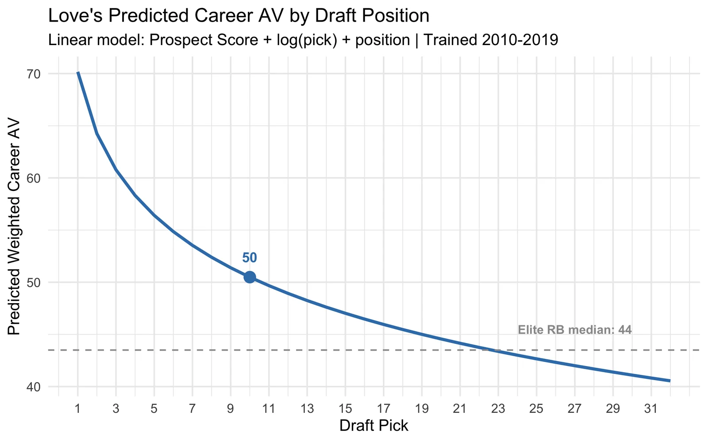
The linear model, trained on 2010-2019 and tested on the 2020-2022 classes it’s never seen (test R² = 0.162, RMSE = 13.9) — projects Love at 50 weighted career AV at pick 10. For context, the median elite RB (top 10% Prospect Score) historically produced 44 career AV. The model says Love’s pre-draft profile is worth a first-round pick.
Did First-Round RBs Actually Outproduce the Alternative?
Article 1 gave us the Sharpe ratio for RB in the top 10: -0.615. That’s the average across all RBs drafted in the top 10 since 2010. But averages hide a massive range. Some first-round RBs were franchise cornerstones. Others were busts. The question isn’t whether RBs are worth it on average – it’s how often they outproduce the player a team could have taken instead.
Here’s every first-round RB in our data, plotted against the non-RB taken with the very next pick. The circle is the RB. The yellow X is whoever was drafted immediately after them. Green means the RB produced more career value; red means the next pick was better.
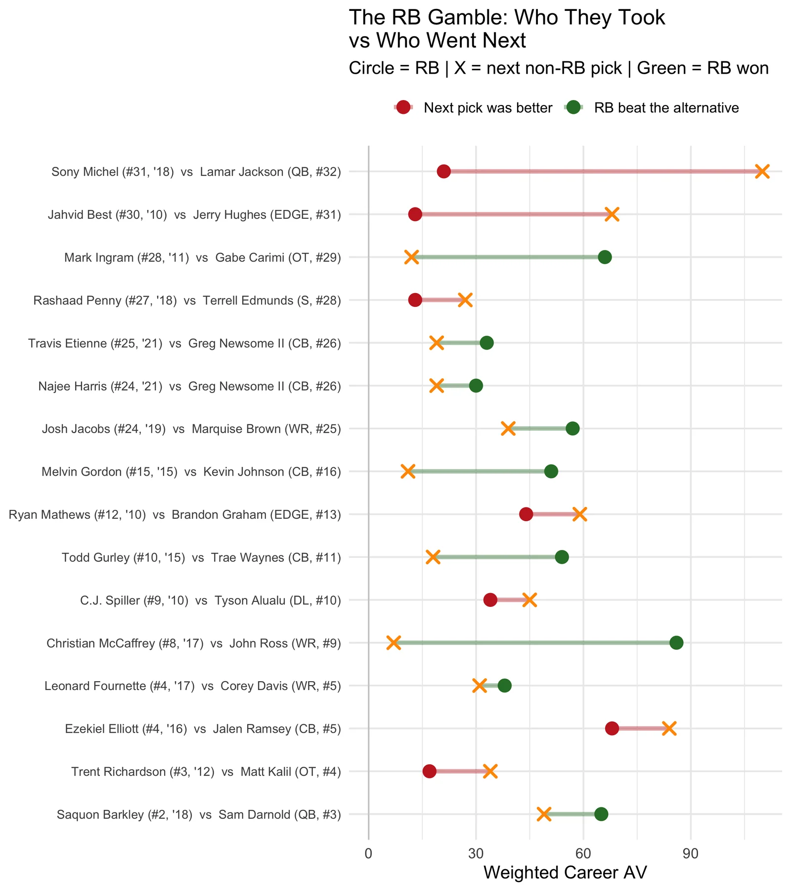
Article 1’s tier-level Sharpe for RB in the top 10 is -0.615, the worst of any position. The weighted career AV comparison shows why.
The wins: CMC (86 career AV) vs John Ross (WR, 7). Gurley (54) vs Trae Waynes (CB, 18).
The losses: Trent Richardson at pick 3 (17 career AV). The next pick was Matt Kalil (OT, 34 career AV).
Only 56% of first-round RBs outproduced the very next non-RB drafted. Love needs to be in the CMC/Gurley tier, not the Richardson tier, to justify the pick.
The Negative-Sharpe Picks: What Teams Left on the Table
The Sharpe ratio flags specific position-tier combinations as negative, plays the model says teams shouldn’t make. Since 2010, 135 first-round picks went to non-premium positions at tiers where the Sharpe ratio was negative. But what actually happened to the next premium player taken? Instead of a theoretical counterfactual, we tracked the real one: for each negative-Sharpe pick, we found the actual next QB, EDGE, OT, or WR drafted in the same year and compared outcomes.
| Negative-Sharpe First-Round Picks (2010-2022) | |||||||||||
| 128 picks at negative-Sharpe combos vs the actual next QB/EDGE/OT/WR drafted | |||||||||||
| Position | Picks | Avg Pick |
What They Got
|
Next Premium Player Taken
|
Surplus Δ ($M) | ||||||
|---|---|---|---|---|---|---|---|---|---|---|---|
| Career AV | Surplus ($M) | Hit % | Elite % | Career AV | Surplus ($M) | Hit % | Elite % | ||||
| IOL | 34 | 18.1 | 38.4 | 43.0 | 53.8 | 20.6 | 34.3 | 91.3 | 50.0 | 14.7 | -48.3 |
| LB | 33 | 16.2 | 42.5 | 48.8 | 40.0 | 30.3 | 30.7 | 80.4 | 46.9 | 12.1 | -31.6 |
| CB | 17 | 6.6 | 41.8 | 59.8 | 53.3 | 47.1 | 50.2 | 96.9 | 76.5 | 23.5 | -37.1 |
| RB | 16 | 16.0 | 43.1 | 48.1 | 56.2 | 43.8 | 46.4 | 95.3 | 60.0 | 31.2 | -47.2 |
| S | 11 | 17.7 | 31.6 | 48.1 | 45.5 | 27.3 | 31.6 | 77.4 | 9.1 | 18.2 | -29.3 |
| TE | 10 | 18.0 | 25.7 | 41.2 | 60.0 | 60.0 | 41.0 | 83.0 | 50.0 | 30.0 | -41.8 |
Since 2010, 135 first-round picks went to position-tier combos where the Sharpe ratio was negative, plays Article 1’s model explicitly flags as bad bets. For 128 of those, we found the actual next premium-position player (QB, EDGE, OT, or WR) taken in the same draft. Those negative-Sharpe picks averaged 40 career AV and $49.2M in surplus value. The next premium player taken averaged 38 career AV and $85.8M in surplus, a gap of -$36.6M.
RB specifically: 16 first-round RBs at negative-Sharpe tiers, averaging $48.1M in surplus vs $95.3M for the next premium player actually drafted (Δ = -$47.2M). The surplus gap is the dagger: it’s the value teams left on the table by taking the ‘wrong’ position. For RBs, the next premium player generated more surplus, confirming the Sharpe ratio’s warning.
Why are these numbers so large? Surplus value is driven by the gap between a rookie contract and free-agent replacement cost, compounded over four years. Consider the 2018 draft: Saquon Barkley (pick 2) earned ~4.4% of the cap on his rookie deal, while a replacement RB costs ~6%, a savings of just ~$4M/yr. Sam Darnold (pick 3) earned ~4.3%, but a replacement QB costs ~14.6%, a savings of ~$26M/yr. Over four years, Darnold’s rookie surplus alone (~$120M in today’s cap terms) dwarfs Barkley’s (~$19M), even though Darnold’s rookie contract years with the Jets were a disaster. The cost-controlled advantage at positions with expensive free-agent markets is so massive that even a mediocre QB outcome beats a great RB outcome in surplus terms.
The numbers are staggering. This isn’t a theoretical ‘what if’ — these are the actual outcomes of the next QB, EDGE, OT, or WR taken in the same draft. The surplus gap is real, it’s persistent, and it’s the strongest argument in the Sharpe ratio’s arsenal.
The Surplus Value View
Career AV showed Love projecting as one of the best prospects in the 2026 class on pure production. That’s a real finding. But it’s not the metric Article 1 used, and for good reason. The Sharpe ratio measures surplus value — how much cheaper a drafted player is than a free-agent replacement. Production tells you how good a player is. Surplus tells you how much value you captured by drafting him instead of signing a free agent. The counterfactual table above showed that gap in action. Now let’s put Love through the same lens. The formula:
Surplus Value = Rookie Surplus + Second Contract APY (as % of cap)
Where rookie surplus = snap ratio × (FA replacement cost − rookie deal APY) × 4 years. A QB on a rookie deal saves ~10% of the cap per year vs free agency; an RB saves ~1.6%. Over four years, that difference alone is worth ~$90M in today’s terms, before we even get to second contracts.
Instead of predicting player return as a single number, we decompose it into its components (two modeled, two known):
- Snap ratio (quantile regression): predicts how much a player will play from Prospect Score, draft position, and position. OLS R² = 0.332. This is what scouting grades should actually predict.
- Second contract value (quantile regression): predicts the market’s verdict after the rookie deal.
- FA replacement cost: known by position (QB = 14.6% of cap, RB = 6.0%, EDGE = 9.1%).
- Rookie deal APY: known by pick from the CBA rookie wage scale.
We use quantile regression at the 10th, 50th, and 90th percentiles for both modeled components. This lets us assemble floor, median, and ceiling outcomes for any prospect:
Player Return = Snap Ratio × (FA Cost − Rookie APY) × 4 + Second Contract
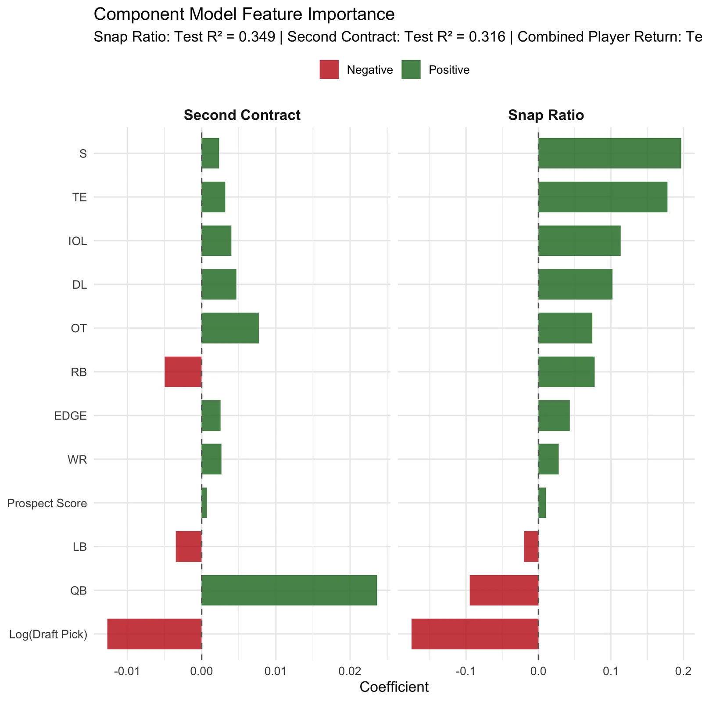
Model performance: The snap ratio model (OLS R² = 0.332, test R² = 0.349) captures how much a player plays. Prospect Score is the strongest predictor — higher-graded prospects earn more snaps. The second contract model (test R² = 0.316) predicts the market’s verdict after the rookie deal. When we assemble the full player return from these components plus the known FA costs and rookie APY, the combined median out-of-sample R² is 0.866.
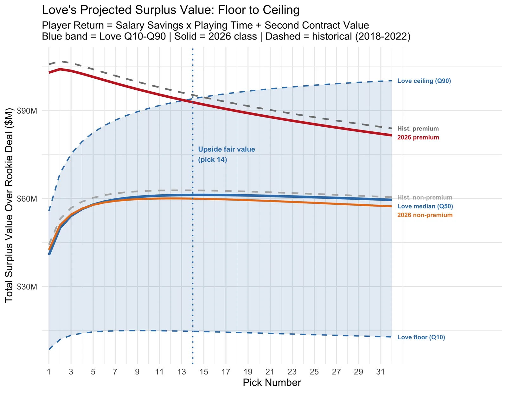
The chart confirms what the counterfactual data already told us: the surplus gap is structural. Love’s median outcome (solid blue) runs well below the premium position average at every pick. The Sharpe ratio’s core argument holds up.
But the ceiling tells a different story. There are two paths through the surplus math: high snap ratio and a big second contract. An RB who plays 90%+ of snaps and earns a market-resetting second deal can close most of the structural gap. Love’s 90th-percentile outcome crosses the premium position average at pick 14. That’s the narrow window where the bet makes sense.
At pick 10, Love’s median surplus is $60.8M vs $96.4M for the premium position average — a gap of $35.5M. Even when career production is comparable, premium positions generate more surplus because free-agent replacements cost so much more. The Sharpe ratio’s framework is doing exactly what it was built to do.
The ceiling case is the only path through. Love’s 90th-percentile outcome — a Gurley/CMC-level career with elite snap share and a market-resetting second contract — crosses the premium position average at pick 14. That’s the bet: a team drafting Love after pick 14 isn’t ignoring the surplus math. They’re betting that his talent ceiling is high enough to overcome it.
This is where the stress test lands. The Sharpe ratio’s position economics are sound. But the framework assumes an average prospect at each position. Love isn’t average — and the gap between his talent and the next RB in this class is wide enough to matter.
Which Teams Actually Need an RB?
We showed earlier that having a back on the depth chart isn’t the same as having the position filled. RB is a high-turnover position. Backs get hurt, decline fast, and cycle through rosters more than QBs or OTs. A team can enter the offseason with an “RB1” on the depth chart and still have a genuine need if that back is a committee player, a career backup, or an aging veteran without a long-term future.
Here’s what every team’s RB room looks like heading into the 2026 draft, based on current depth charts.
| 2026 RB Room Snapshot | |||||
| Current depth charts via OurLads | Sorted by need then pick | |||||
| Team | R1 Pick | RB1 | RB2 | RB3 | Status |
|---|---|---|---|---|---|
| ARI | 3 | Tyler Allgeier | James Conner | Trey Benson | Need |
| TEN | 4 | Tony Pollard | Tyjae Spears | Michael Carter | Need |
| NYG | 5 | Cam Skattebo | Tyrone Tracy Jr. | Devin Singletary | Need |
| WAS | 7 | Rachaad White | Jerome Ford | Jacory Croskey-Merritt | Need |
| MIN | 18 | Aaron Jones Sr. | Jordan Mason | Zavier Scott | Need |
| CAR | 19 | Chuba Hubbard | Jonathon Brooks | Trevor Etienne | Need |
| JAX | 24 | Bhayshul Tuten | LeQuint Allen Jr. | Chris Rodriguez Jr. | Need |
| NE | 31 | Rhamondre Stevenson | TreVeyon Henderson | Lan Larison | Need |
| SEA | 32 | Zach Charbonnet | Emanuel Wilson | George Holani | Need |
| LV | 1 | Ashton Jeanty | Dylan Laube | Chris Collier | Filled |
| NYJ | 2 | Breece Hall | Braelon Allen | Isaiah Davis | Filled |
| CLE | 6 | Quinshon Judkins | Dylan Sampson | Raheim Sanders | Filled |
| NO | 8 | Travis Etienne Jr. | Alvin Kamara | Kendre Miller | Filled |
| KC | 9 | Kenneth Walker | Brashard Smith | Emari Demercado | Filled |
| CIN | 10 | Chase Brown | Samaje Perine | Tahj Brooks | Filled |
| MIA | 11 | De'Von Achane | Jaylen Wright | Ollie Gordon II | Filled |
| DAL | 12 | Javonte Williams | Malik Davis | Jaydon Blue | Filled |
| ATL | 13 | Bijan Robinson | Brian Robinson | Tyler Goodson | Filled |
| BAL | 14 | Derrick Henry | Justice Hill | Rasheen Ali | Filled |
| TB | 15 | Bucky Irving | Kenneth Gainwell | Sean Tucker | Filled |
| IND | 16 | Jonathan Taylor | DJ Giddens | Ulysses Bentley IV | Filled |
| DET | 17 | Jahmyr Gibbs | Isiah Pacheco | Jacob Saylors | Filled |
| GB | 20 | Josh Jacobs | Chris Brooks | MarShawn Lloyd | Filled |
| PIT | 21 | Jaylen Warren | Rico Dowdle | Kaleb Johnson | Filled |
| LAC | 22 | Omarion Hampton | Keaton Mitchell | Kimani Vidal | Filled |
| PHI | 23 | Saquon Barkley | Tank Bigsby | Will Shipley | Filled |
| CHI | 25 | D'Andre Swift | Kyle Monangai | Roschon Johnson | Filled |
| BUF | 26 | James Cook III | Ty Johnson | Ray Davis | Filled |
| SF | 27 | Christian McCaffrey | Jordan James | Isaac Guerendo | Filled |
| HOU | 28 | David Montgomery | Woody Marks | Jawhar Jordan | Filled |
| LA | 29 | Kyren Williams | Blake Corum | Ronnie Rivers | Filled |
| DEN | 30 | J.K. Dobbins | RJ Harvey | Jaleel McLaughlin | Filled |
Putting It All Together: Who Should Draft Love?
Everything we’ve built in this article converges on a single question. Which teams are in the best position to draft Jeremiyah Love?
There’s one more factor the surplus math can’t see: RBs peak early and decline fast.
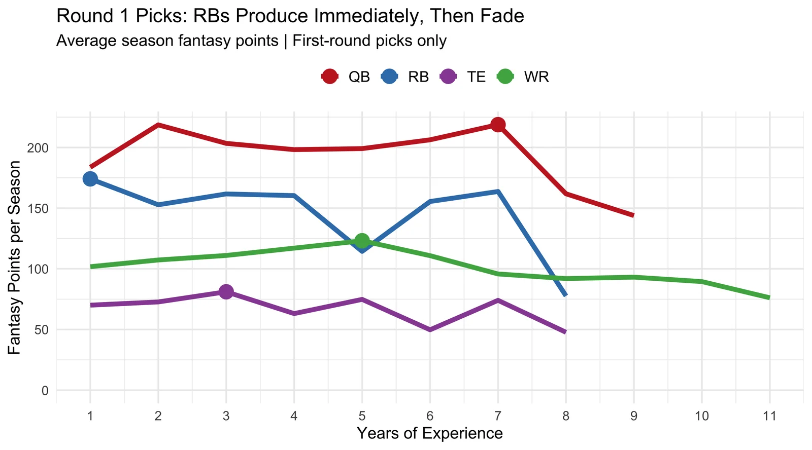
RBs produce immediately — 70 fantasy points in year 1, nearly matching QBs (148) and dwarfing WRs (52). But they peak in year 7 and decline fast. QBs keep climbing. WRs don’t peak until year 9. This creates a draft timing problem: teams picking in the top 10 are usually rebuilding. Draft an RB when your team isn’t competitive, and by the time you’re contending, you’ve burned the best years. Teams picking later — pick 14 and beyond — are closer to contention. They can put Love’s peak years to use immediately. That’s not just a surplus argument. It’s a roster construction argument.
So the picture comes into focus. Love’s ceiling crosses the premium surplus line at pick 14. RBs peak early and decline fast. And nine teams need a running back.
The sweet spot — teams that need an RB and pick at 14 or later:
- MIN (pick 18): Aaron Jones Sr., Jordan Mason, Zavier Scott
- CAR (pick 19): Chuba Hubbard, Jonathon Brooks, Trevor Etienne
- JAX (pick 24): Bhayshul Tuten, LeQuint Allen Jr., Chris Rodriguez Jr.
- NE (pick 31): Rhamondre Stevenson, TreVeyon Henderson, Lan Larison
- SEA (pick 32): Zach Charbonnet, Emanuel Wilson, George Holani
These teams check every box. They need a back, they pick where the upside math works, and they’re close enough to contention to use Love’s peak years.
The harder call — ARI (3), TEN (4), NYG (5), WAS (7):
These teams need an RB but pick before 14, where the surplus math still favors premium positions. Love’s career AV projects above the premium average at every pick — but the Sharpe ratio’s framework says the opportunity cost of passing on EDGE/OT/WR talent is too high this early. If you’re picking here, you’re betting on career production over cap efficiency. It’s defensible. But it’s a bet.
The other 23 first-round teams already have a productive RB. For them, the Sharpe model’s advice is unchanged: draft a premium position.
What the Stress Test Found
The Sharpe ratio works. The positional hierarchy held up under every test we threw at it: QB, EDGE, OT, and WR generate more surplus than non-premium positions, and the counterfactual data confirms it. The surplus gap is real and staggering. This article didn’t disprove the framework — it stress-tested it and found it sturdy.
But we also found three conditions that turn “never draft RB in round 1” from a universal law into a conditional one:
Roster context matters. Having a name on the depth chart isn’t the same as having the position filled. Nine teams enter 2026 without a long-term answer at RB. For them, the opportunity cost of not drafting one is higher than the model assumes.
Class depth varies wildly. The 2026 RB class is thin — Love is the only Elite prospect. Pass on him and there’s no comparable alternative in round 2 or 3. Meanwhile, IOL, CB, and WR are loaded. The positions the model says to take instead will still be available later. The RB won’t be.
Not all prospects are average. Love’s 94.3 Prospect Score ranks 5th among all RB prospects since 2010. The model averages over all RBs. Love isn’t average. His 90th-percentile surplus outcome crosses the premium position average at pick 14 — and RBs produce immediately, peaking in their first two years while QBs and WRs are still developing.
What still holds: QB is still king. The surplus math still favors premium positions before pick 14. Day 2+ RBs are still the default when the class isn’t thin. The Sharpe ratio is a good framework — one of the best tools we have for draft strategy. It just can’t see the difference between “RB” and “this RB, in this class, for this team.”
The bottom line: The Sharpe ratio is right that premium positions generate more surplus, and the data backs it up convincingly. But within that framework, we found a slightly more generous outlook for Love than ‘never draft an RB’ suggests. Nine teams need a running back. The 2026 class is thin. Love is separated from every other RB prospect by 17 points. His ceiling crosses the premium surplus line at pick 14. And RBs produce immediately — Love’s peak years align with the rookie contract window.
The best fits are MIN (18), CAR (19), JAX (24), NE (31), SEA (32) — teams that need a back, pick where the upside math works, and can’t find a comparable RB later in this thin class. For a team like MIN (18) — aging Aaron Jones, no long-term answer — Love is a reasonable first-round pick, not in spite of the Sharpe ratio, but because the framework leaves room for exactly this kind of exception: elite talent, genuine need, no alternative.
Methodology Notes
Data: Player stats from Pro Football Reference via
nflreadr. Contract data from OverTheCap via
nflreadr. All values normalized to percentage of salary cap
at time of signing. Analysis covers 2010-2022 draft classes (minimum 4
NFL seasons for fair evaluation).
Hit definition (Article 1): Snap-based quality measure. A “hit” is a player who plays above the positional snap threshold (75% of baseline snaps for their position). This measures whether a player became a starter.
Elite outcome measure: For comparing elite categories, we use Article 1’s snap-based hit rate as the outcome (independent of career AV, which defines the career elite group). Weighted Career Approximate Value (weighted career AV) from Pro Football Reference — which weights toward peak seasons — is used for defining career elite prospects (top 10% at position) and for individual player comparisons in the dumbbell chart.
Elite classification: Two definitions used. Retrospective: top 10% of weighted career AV within each position group. Prospective: top 10% of Prospect Score within each position group. Players meeting both criteria had the highest elite outcome rates.
Prospect Score: NFL Next Gen Stats composite prospect score combining athletic testing, college production, and size metrics. Published pre-draft. Historical scores matched to draft records via normalized name and position group.
Class depth: A class is “deep” if its count of Good+ prospects (Prospect Score >= 70) exceeds the position’s median Good+ count across all years. “Thin” if below the median.
Roster needs: A position is “filled” if the team had a starter who played above the hit threshold, earned a second contract above the free-agent replacement cost for the position, and was not on an expiring deal. A position is a “need” if it wasn’t filled.
Predictive models: Two models trained on players drafted 2010-2019 with Prospect Scores and career outcomes, validated out-of-time on the 2020-2022 classes. Features: Prospect Score, log(draft pick), and position group. Draft pick is log-transformed because draft value declines non-linearly. (1) Linear regression predicting weighted career AV. (2) Component-based player return model using quantile regression (10th/50th/90th percentiles) for snap ratio and second contract value, combined with known FA replacement costs and CBA rookie wage scale. Athlete Score and Production Score (sub-components of Prospect Score) were tested but excluded — neither was significant when the composite Prospect Score was already in the model.
Part 1: Full methodology and interactive charts at stranger9977.github.io/draft-sharpe-analysis
Built with R, ggplot2, nflplotR, and gt. Data from nflverse and Pro Football Reference.